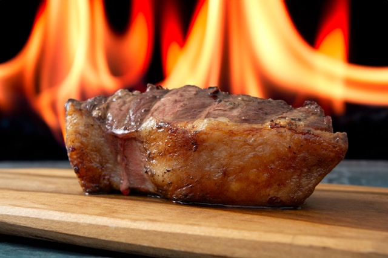

Flame Grilled Steak

Description
A very simple recipe for cooking the perfect steak.
ingredients
- Beef Steak
- Salt (optional)
Steps
- Take steak out of packaging
-
If using salt, give the steak a rub with salt, Rest on a rack, placed on
a dish to catch any drip in the fridge for at least an hour.
- Take the steak and grill it over coals or a stove.
-
Once cooked to desired finish, remove from heat and rest the meat for 10
minutes before serving and enjoying.
Additional Notes on Cooking Times
Depending on how thick your steak is, will depend on how long you cook it
for.
Depending on well done you like your steak will depend on how long you
cook it for.
For a rare steak 1 inch thick, 3 minutes a side will do te job.
For a medium steak 1 inch thick, 5 mminutes a side will do the trick.
For a well done steak, just leave that thing on until the sizzle stops.